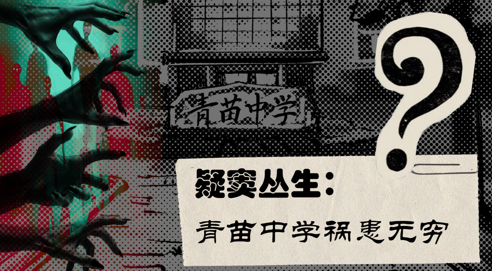
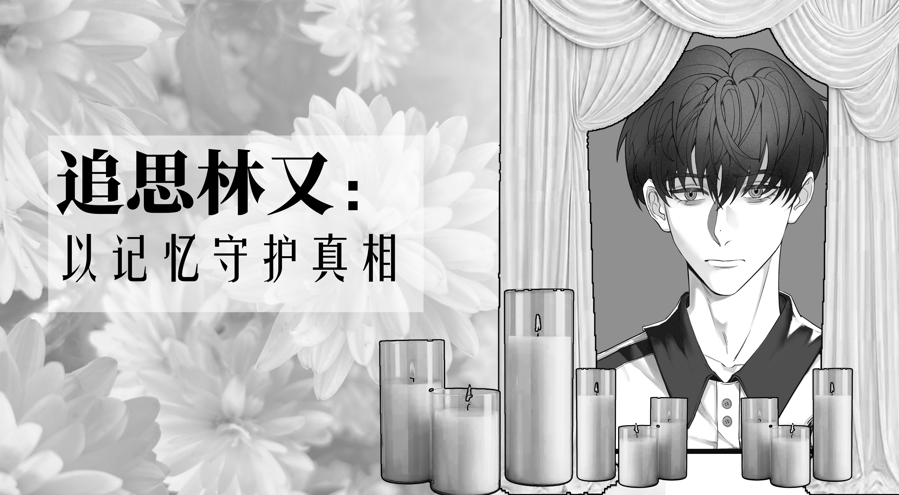

近日，武阳市公安局联合市教育局、市卫生健康委、市市场监督管理局，对青苗中学涉嫌违法犯罪一案实施集中收网。经前期缜密侦查和群众举报，警方于10月15日对该校展开全面清查行动。目前，案件主要事实已初步查明，涉案人员及场所已依法处置，1499名在校学生已全部安全转移。
现将有关情况通报如下：
案件基本情况
 📷 案件现场
📷 案件现场
青苗中学自2020年起，在办学过程中逐步偏离正常教育轨道，以所谓"特色培育"为名，实施了一系列超出法律许可范围的行为。
调查发现，该校在入学体检环节中，超出正常体检范围，额外采集学生血液及口腔黏膜样本，用于非教学目的的生物学分析，且未就采集用途向学生及监护人进行明确告知与书面授权。同时，该校在编班管理中，依据分析结果将学生划分为"英才班"与"青苗班"两类，其中青苗班学生的日常管理、课程安排及膳食配给与英才班存在显著差异，且青苗班学生长期被限制与外界正常接触。该编班方式缺乏合理教育依据，涉嫌侵犯学生平等受教育权利。
此外，校医院在未取得药品生产资质的情况下，自行配制名为"YC-08"的液体补充剂，并以"营养加强奶"名义向青苗班学生每日供应。初步检测显示该制剂含有未在食品或营养品目录中登记的物质成分，可能对学生正常生理发育产生不良影响。具体成分及长期摄入风险尚待进一步检测确认。
校内"青苗农场"在被用作农业生产教学基地的同时，设有未向教育及食品安全部门报备的封闭加工区域。该区域存在非食用原料加工行为，所产出产品被冠以"英材良品"品牌流入学校食堂。产品原料来源及加工过程是否符合食品安全标准，正在进一步鉴定。
调查过程中还发现，该校存在伪造学生体检报告、学籍档案等行为。2025年3月学生林某在校期间死亡一事，校方所提交的事故调查报告与现有证据存在多处矛盾，涉嫌伪造材料、隐瞒事实。
涉案场所及人员处置
10月15日凌晨，警方依法对青苗中学教学楼、宿舍、食堂、校医院及农场区域实施全面控制。现场查获非法制剂原料数十箱、加工设备若干套，以及标注"英材良品"品牌的罐头制品400余罐。校医院特殊制剂室内，警方查获未贴标的液体样本、实验记录本以及一批生物样本存储设备。青苗农场内的温室大棚和地下培育区已被封锁，相关实验器具与培养装置已封存。
截至目前，涉案的44名核心人员——包括校长、校医院负责人、农场项目主管等——已全部被依法采取刑事强制措施。涉案的"青苗农场"试验基地、校医院特殊制剂室、食堂非法加工区等17处场所已被依法查封，相关实验设备、制剂原料、生产工具及涉案食品均被扣押。
相关非法活动已全部被有效制止，彻底消除了其对师生健康的直接危害风险。
学生安置与认领情况
10月16日上午，学校体育馆被临时改造为认领登记点。警方通过学籍系统与家长信息库逐一比对，分批次通知家长到场认领学生。
认领现场秩序井然。不少家长在见到孩子后情绪激动，工作人员协助完成信息核对、签字确认等手续。截至10月16日晚21时，全部1499名学生已按照法定程序，由家长接回或由专案组安排统一照护。
在认领工作推进过程中，由于部分学生学籍档案信息与现阶段身体状况之间存在不一致，相关信息尚需时间进行核实与比对。公安机关经审慎研究，将该部分学生暂时安置于校园指定区域，由专案组协调医务人员及教育工作人员负责统一照护与生活保障，待信息确认完毕后，再行安排其与家人团聚。
目前，该区域已实施封闭管理，日常工作由专案组统一调度，学生日常生活、情绪疏导及医疗保障均有专人负责。公安机关表示，该项安排是为确保每一位学生能够准确、稳妥地回到亲属身边，后续将根据核查进展适时向社会通报进一步情况。
后续调查与科学研究介入
为进一步查明案件所涉及的生物医学技术细节，武阳市公安局联合格致生命科学研究所（GILS）于10月17日召开专题会议。经上级主管部门批准，格致生命科学研究所将作为第三方科研机构，正式介入本案的相关技术调查工作。
格致生命科学研究所（GILS）是一家独立注册的生命科学研究机构，长期从事青少年发育、营养与生物信息分析等领域的学术研究。该所表示，将秉持科学严谨的态度，协助警方对以下内容展开进一步分析：
- 校医院查获的非法制剂成分鉴定
- 青苗农场生物样本的溯源检测
- 学生体内残留物质的代谢追踪与健康风险评估
- 涉案生物技术手段的技术还原
研究所工作人员已于当日下午进驻校园，对封存样本进行初步清点与登记。相关检测结果将在依法完成鉴定程序后，移送司法机关作为案件证据。
司法程序已启动
武阳市人民检察院已依法对本案展开审查，将对青苗中学董事会成员、校长、校医院负责人、农场项目主管等主要涉案人员，以涉嫌非法行医、危害公共安全、生产销售有毒有害食品等罪名，依法提起公诉。
市教育局表示，将配合司法机关完成后续工作，并启动全市范围内民办中小学的专项排查，重点检查招生体检流程、校内食品供应体系及校医院资质。
市市场监督管理局已对"英材良品"系列罐头产品启动全国范围召回，并在官方平台公布产品批次与流通渠道，呼吁消费者停止食用并联系退回。
写在最后
当成绩和"成才"成为唯一的评价标准，当名校录取成为家长竞相追逐的目标，我们的孩子正在承受怎样的压力？
青苗中学之所以能够长期蒙蔽家长和社会，很大程度上是因为它完美地迎合了这种焦虑——"英才班"、"特色培育"、"高升学率"，每一个标签都精准击中了家长望子成龙的心理。而正是这种急切的期待，让许多人失去了基本的判断力，忽视了孩子身上那些细微的异常。
少问一句"考了多少分"，多问一句"今天开心吗"。
少关心排名和升学率，多关心孩子的睡眠、饮食和情绪变化。
少以"为你好"的名义施加压力，多为孩子保留表达的空间。
一个健康的孩子，从来不是用分数和名校录取通知书来衡量。他们的笑容、好奇心和安全感，才是最珍贵的成长指标。
今日武阳 · 为您关注真相



